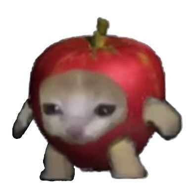
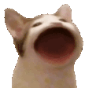
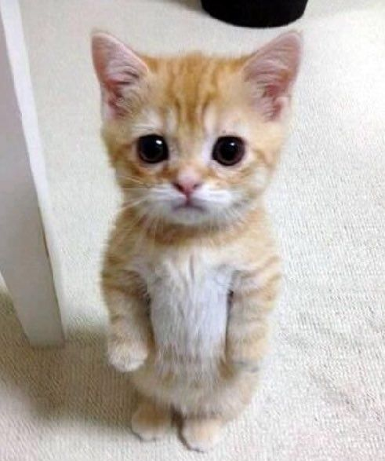

고양이 백과사전
로그인
목차
클릭 시 유튜브로 바로가기
해피캣
고양이 밈의 원조 고양이 사실 조금 질림
바나나캣
우는게 귀여운 고양이 눈물의 양이 어마무시해서 물대포마냥 쓰기도한다.
인기가 많아 굿즈인형도 출시된 모습이다.
이미지 클릭시 구매 링크로 이동합니다.

사과캣
걸음걸이가 귀여운게 인상적인 고양이 사과가 아니라 다른게 박혀있는 기출변형도 존재한다.

사과캣은 소리가 존재하지 않습니다!
팝캣
트와이스 다현 닮은 꼴로 유명한 고양이 사이트가 한때 유행했었다.
사이트 바로가기

맥스웰
대개 조력자 위치지만, 어떨 때는 빌런으로 등장하는 고양이 얘도 사이트가 있다.
사이트 바로가기

오이아캣
맥스웰과 비슷한 위치, 맥스웰 실직의 주요 원인이 되는 고양이
글쓴이의 주관적인 생각으로는 고양이 소리중에 제일 중독성 있다.

엘가토
은근 인지도가 높은 고양이 귀여움은 원탑

엘가토는 소리가 존재하지 않습니다!
스머프캣
요즘 유행중인 대세 고양이 이다.
Alan Walker의 The Spectre라는 노래가 사용되었다.

we live we love we lie
참고 영상